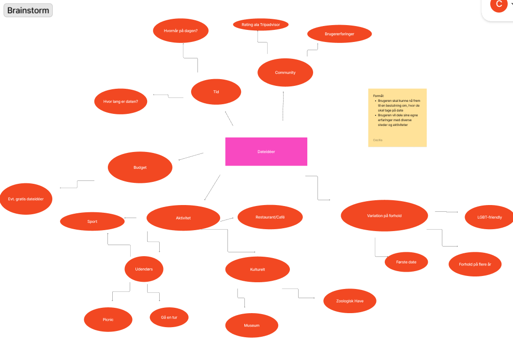
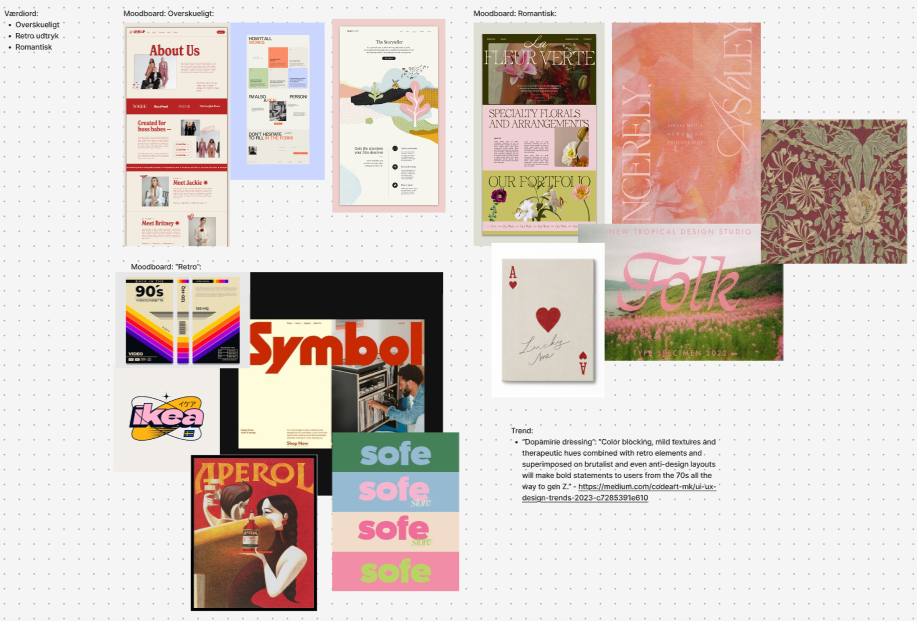
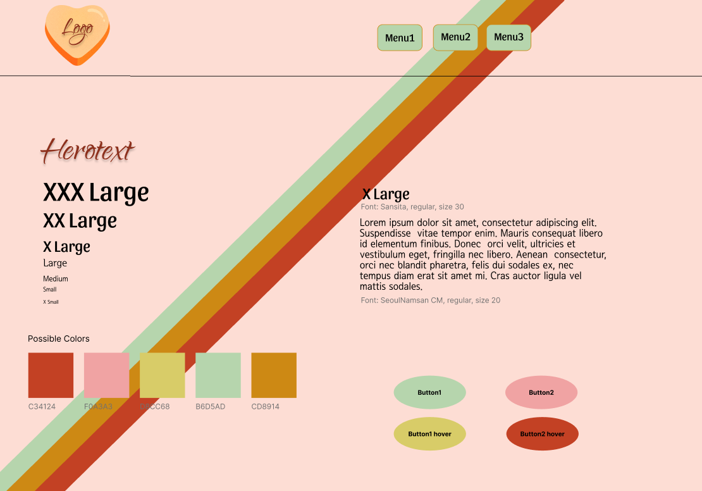
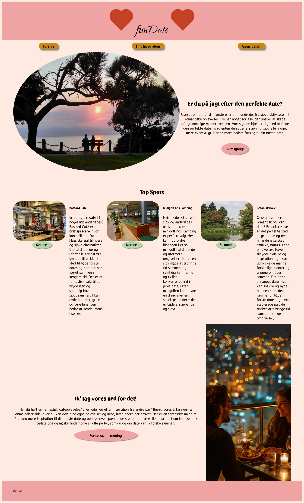
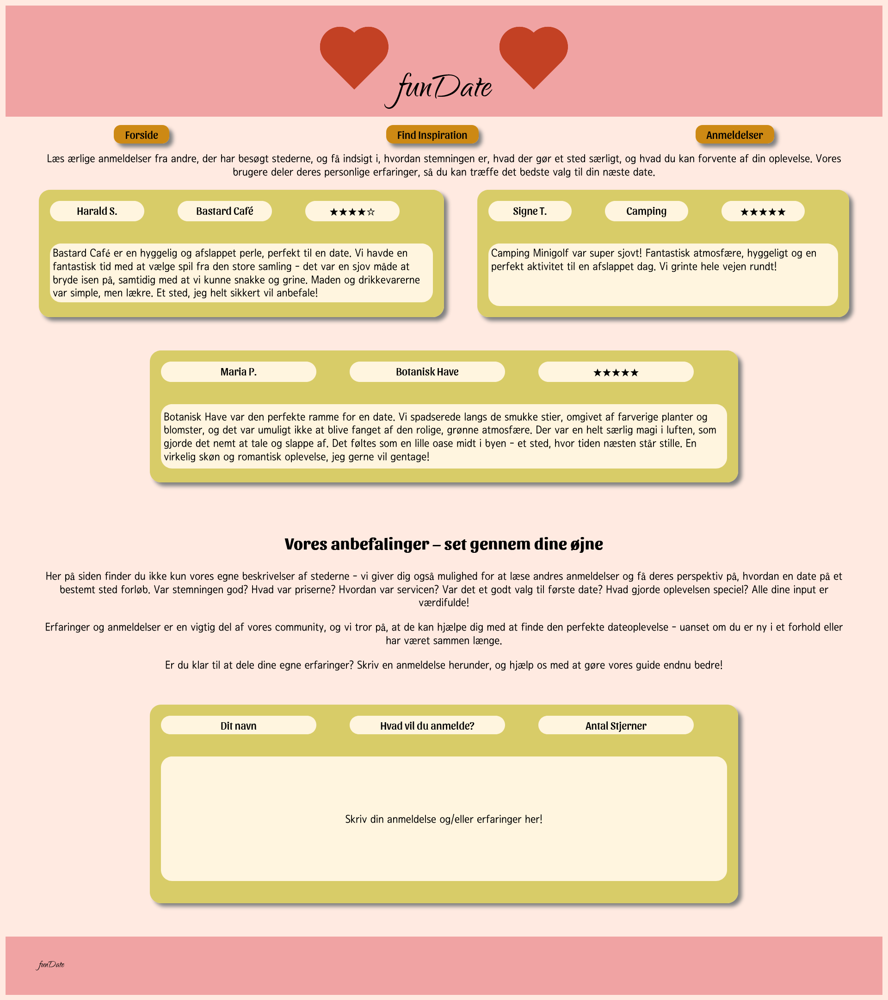
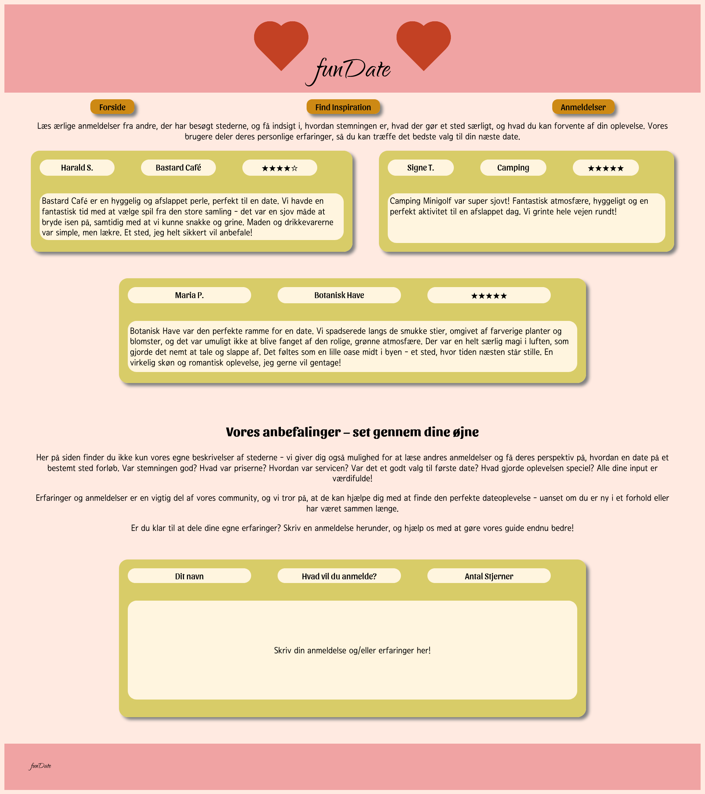

UX/UI
Tema 3 blev kaldt for grundlæggende UX/UI, med opgaven om at lave et “emnesite”. Et site om et selvvalgt emne. Emnet blev valgt ved at lave forskellige brainstorms om vores interesser. Jeg fik idéen om, at lave et site dedikeret til at finde steder, hvor man kan tage på dates; første, anden eller tyvende. Ud fra denne idé, brainstormede jeg, hvad der kunne være på sådan et site:
Herefter lærte vi, hvordan man kan bruge moodboards til at udvikle et styletile, så man har et klart billede af, hvordan siden skal se ud; hvilke farver man vil bruge, fonte, hvordan evt. knapper skal styles. Dette gjorde jeg ved, at bruge tre “værdiord”, der skal beskrive det ønskede design, og lave moodboards til hvert af ordene:
Således kom jeg frem til et styletile:
Efter dette fik jeg lavet wireframes, samt en klikbar prototype, som jeg kunne bruge til, at teste sitet. Jeg lavede en “tænke-højt”-test, hvor testpersonen var en del af målgruppen til sitet. Testpersonen fik forskellige opgaver, han skulle udføre på sitet, samtidigt med, at han siger alt hvad han tænker imens.
Testresultaterne var meget givende, og jeg endte med at ændre meget på prototypen. Nogle knapper skulle flyttes for bedre at kunne se dem, nogle ord på knapper måtte også ændres for at fremme forståelse om, hvor de førte hen.
I tema 3 lærte jeg også om research ved at undersøge, hvordan emnet allerede bliver formidlet på andre sider. Herfra kunne jeg få inspiration, ved at finde ud af, hvad der fungerede og hvad der ikke gjorde, på disse sider, og tage den information med, når jeg skulle udvikle min egen.
Herunder kan min fulde løsning af opgaven ses:
 
